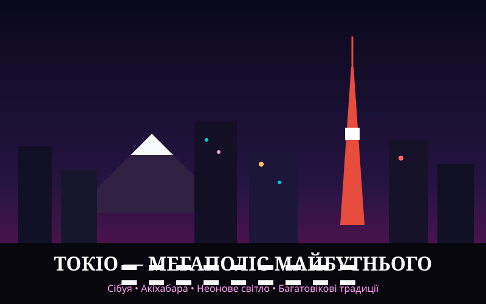

Загальна характеристика

Токіо — найбільша міська агломерація планети, де ультрасучасна урбаністика й високі технології ідеально співіснують із багатовіковими синтоїстськими храмами та спокоєм садів сакури.
Чому це місто особливе
Токіо захоплює відчуттям подорожі в інше століття: ідеальна транспортна логістика, чистота, безпека, кіберпанкова естетика районів Акіхабара та Сіндзюку поряд із чайною церемонією в парку Уено.
Цікаві факти
- Знаменитий пішохідний перехресток у районі Сібуя в години пік одночасно перетинають до 3 000 людей за одне перемикання світлофора.
- Токійський метрополітен перевозить понад 3 мільярди пасажирів на рік і вирізняється феноменальною пунктуальністю.
- У Токіо зосереджена рекордна кількість ресторанів, відзначених зірками Мішлен, у світі.
Визначні місця
- Район Сібуя та пам'ятник вірному псу Хатіко.
- Найстаріший буддійський храм міста — Сенсо-дзі в Асакусі.
- Електронний та аніме-квартал Акіхабара.
- Оглядовий майданчик хмарочоса Tokyo Skytree.
- Імператорський палац та сади Кокіо.
Особиста оцінка
Оцінка: 9.5 / 10 (Вершина технологічної естетики та самобутньої культури).
Додаткова інформація
Офіційний путівник для мандрівників: Офіційний туристичний портал GO TOKYO.